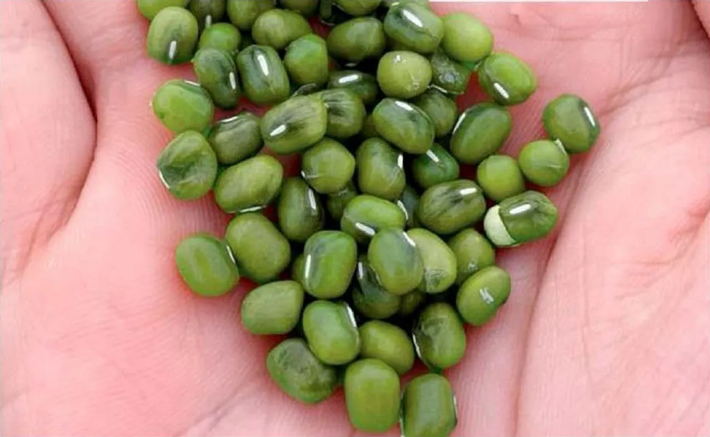

Programa
Canje 2x1
Incluye
- Semilla
- Compromiso de compra de la producción
Modalidad comercial
Canje 2x1
Se instrumenta además un pagaré por USD 25/ha.
Propuesta comercial
Una alternativa de ciclo corto para sumar a la rotación.

Programas de siembra con compromiso de compra de la producción.
Características agronómicas y de manejo consideradas en nuestra propuesta.
Aproximadamente 90 días.
Buena eficiencia hídrica para planteos de primavera y verano.
Buena adaptación a condiciones de altas temperaturas.
Siembra y cosecha con equipos convencionales.
| Ventana de siembra | Septiembre a febrero |
|---|---|
| Sistema | Apto para barbecho convencional |
| Densidad objetivo | 300.000 plantas/ha |
| Distancia entre hileras | 17 a 38 cm |
| Profundidad de siembra | 3 a 5 cm |
| Rinde de referencia | 850 a 1.200 kg/ha |
Por su ciclo corto y su ventana de siembra amplia, el mung puede incorporarse en lotes que hayan quedado disponibles, evaluando cada caso según zona, fecha y condición del perfil.
Tres modalidades para elegir según el nivel de servicio y acompañamiento que busque cada productor.
Programa
Canje 2x1
Se instrumenta además un pagaré por USD 25/ha.
Programa
USD 40 por hectárea
Programa
USD 60 por hectárea
El objetivo es que el productor cuente con una propuesta simple para incorporar el cultivo y con una salida comercial prevista para la producción.
Un esquema simple, desde la evaluación del lote hasta la comercialización.
Zona, fecha disponible, antecesor y condiciones generales del planteo.
Canje 2x1, programa de USD 40/ha o de USD 60/ha, según la alternativa que mejor encaje.
Entrega de semilla y definición de los aspectos operativos del programa.
Los programas de USD 40 y USD 60 por hectárea incluyen acompañamiento técnico.
La propuesta contempla compromiso de compra de la producción, sujeto a las condiciones acordadas.
Escribinos y vemos juntos qué alternativa puede adaptarse mejor a tu planteo.
Simón · Prome AgroNegocios
+54 9 351 862-9374
Información orientativa. Las condiciones comerciales, agronómicas y de compra se confirman al momento de cerrar cada operación.